Agar siz ma'lumot fanini o'rganayotgan bo'lsangiz, Python bilan tezda tanishasiz. Nima uchun? Chunki bu ma'lumotlar bilan ishlashda eng ko'p ishlatiladigan dasturlash tillaridan biri. U uchta asosiy sababga ko'ra mashhur:
- O'rganish oson, ishlash oson
- Python turli xil ma'lumotlar tuzilmalari bilan yaxshi ishlaydi
- Ma'lumotlarni vizualizatsiya qilish va statistika uchun kuchli til kutubxonalari mavjud
Bu qo'llanma hamma narsani o'rganadi, asosiylaridan boshlab. Agar siz hech qachon kod bilan ishlamagan bo'lsangiz ham, siz aniq joyidasiz. Faqat tilning ma'lumotshunoslikka tegishli qismi ta'sir qiladi - biz keraksiz va amaliy bo'lmagan nuanslarni o'tkazib yuboramiz. Va oxirida biz, albatta, qiziqarli narsalarni yaratamiz, masalan, bashoratli tahlil.
Bu amaliy qo'llanma!
Ko'rsatmalarni bajarish orqali biror narsa qilish har doim o'qishdan ko'ra ko'proq foyda keltiradi. Agar siz kodni o'z ichiga olgan qismlarni o'zingiz takrorlasangiz, kompyuteringizga yozsangiz, siz hamma narsani 10 barobar yaxshiroq tushunasiz va eslaysiz. Va maqolaning oxirida, albatta, bir yoki ikkita mashqni sinab ko'rish kerak bo'ladi!
Bu shuni anglatadiki, mashq qilish uchun biroz tayyorgarlik kerak. O'rnatish:
- Python 3.6+
- Jupyter (iPython bilan)
- Kutubxonalar: pandalar, numpy, scikit, matplotlib
Nima uchun Python -ni ma'lumot fanlari uchun o'rganish kerak?
Ma'lumotlar bilan ishlash kodini o'rganish vaqti kelganida, ushbu 4 tilga e'tibor qaratish lozim:
- SQL
- Python
- R
- Bash
Albatta, to'rttasini o'qish yaxshi bo'lardi. Ammo agar siz endigina boshlayotgan bo'lsangiz, bir yoki ikkitadan boshlashga arziydi. Eng ko'p tavsiya etilgan variantlar - Python va SQL. Ularning yordami bilan ma'lumotlar va tahliliy muammolar bilan ishlash jarayonining 99% ni qamrab olish mumkin bo'ladi.
Lekin nima uchun Python -ni Data Science uchun o'rganishga arziydi?
- Bu qiziqarli va oson.
- Oddiy analitik loyihalar uchun ko'plab kutubxonalar mavjud (masalan, segmentatsiya , guruhlar tahlili, kashfiyot tahlillari va boshqalar) va murakkablari (masalan, mashinani o'rganish modellarini yaratish).
- Mehnat bozori Python -ni yaxshi biladigan ma'lumotli mutaxassislarni talab qiladi. Bu shuni anglatadiki, rezyumedagi Python juda raqobatbardosh bo'ladi.
Python nima? Bu faqat Data Science uchun mosmi?
Nazariy qism qisqa bo'ladi. Lekin siz uni ishlatishni boshlashdan oldin til haqida ikki narsani bilishingiz kerak.
- Python-bu umumiy maqsadli til bo'lib, u nafaqat Data Science-dan ko'proq foydalaniladi. Bu shuni anglatadiki, ma'lumotlar eksperti bo'lish uchun uni mukammal bilish shart emas. Shu bilan birga, boshqa tillarni tushunish uchun hatto asoslar ham etarli bo'ladi, bu ATda ishlash uchun juda qulaydir.
- Python-bu yuqori darajadagi til. Bu shuni anglatadiki, bu protsessor vaqti bo'yicha eng samarali emas. Boshqa tomondan, u juda sodda, "foydalanuvchilar uchun qulay" va tushunarli qilib yaratilgan. Shunday qilib, agar siz CPU vaqtini yo'qotib qo'ysangiz ham, siz ishlab chiqish jarayonida g'alaba qozonishingiz mumkin.
Python 2 va boshqalar Python 3 - Data Science uchun qaysi birini tanlash kerak?
Ko'pchilik Python 2.x va Python 3.x o'rtasidagi qarama -qarshilik haqida eshitgan. Uning mohiyati shundaki, Python 3 2008 yildan beri mavjud bo'lib, 95% ma'lumotlar va ilm -fan kutubxonalari allaqachon Python 2 -dan ko'chib o'tgan. Bundan tashqari, Python 2 2020 yildan keyin qo'llab -quvvatlanmaydi. Uni o'rganish lotin tilini o'rganish bilan bir xil - ba'zida foydali, lekin kelajak hali ham Python 3.
Shu sababli, bu darsliklar Python 3 da yozilgan.
Eslatma: ammo deyarli har doim ikkala versiyada ishlaydigan kod ishlatiladi.
Yetarli nazariya! Dasturlash vaqti keldi!
Jupyter daftarchasini qanday ochish kerak
Jupyter daftarchasi o'rnatilgandan so'ng, har safar ishga tushirish uchun quyidagi 4 bosqichni bajaring:
Agar siz mahalliy darajada ishlayotgan bo'lsangiz, Jupyter Notebook dasturini ishga tushiring va 4 -bosqichga o'ting.
- Serverga kiring! Buning uchun siz terminalni ochishingiz va buyruq satriga quyidagilarni kiritishingiz kerak:
ssh [ваш_логин]@[ваш ip-адрес]
va parol.
(Masalanssh dataguy@178.62.1.214)
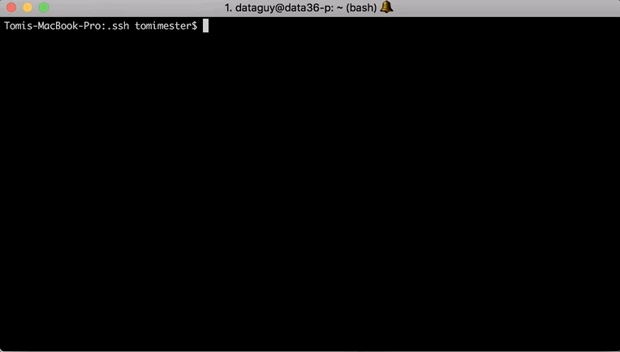
- Buyruq yordamida serverda Jupyter Notebeook -ni ishga tushiring.
jupyter notebook --browser any

- Jupyter -ga brauzer orqali kiring! Buning uchun siz Google Chrome -ni (yoki boshqa) ochishingiz va manzil satriga quyidagilarni kiritishingiz kerak:
[IP адрес удаленного сервера]:8888
(Masalan 178.62.1.214:8888)
Ekranda quyidagilar ko'rsatiladi:
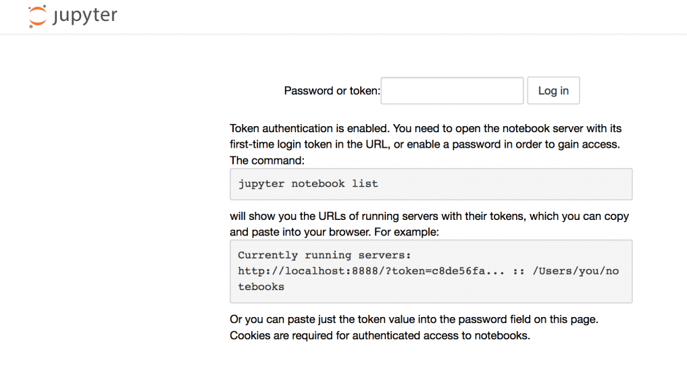
Siz "parol" yoki "token" ni kiritishingiz kerak. Hali parol yo'qligi sababli, avval terminal oynasida joylashgan tokendan foydalanish kerak:
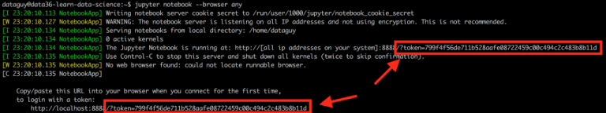
- Tayyor! Endi siz yangi Jupyter daftarini yaratishingiz kerak! (Agar u yaratilgan bo'lsa, uni ochish qoladi).
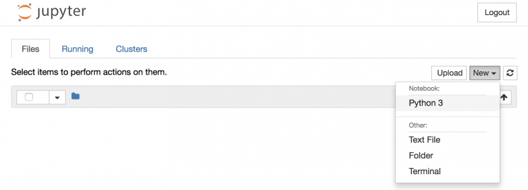
Muhim! Brauzerda ishlayotganda terminal oynasi orqa fonda ishlashi kerak. Agar siz uni yopsangiz, brauzerda Jupyter ham yopiladi.
Hammasi shu. Buyurtmani eslab qoling, chunki siz buni Python for Data Science darsligida tez -tez takrorlashingiz kerak bo'ladi.
Jupyter Notebeook -dan qanday foydalanish kerak
Keling, Jupyter daftaridan qanday foydalanishni ko'rib chiqaylik!
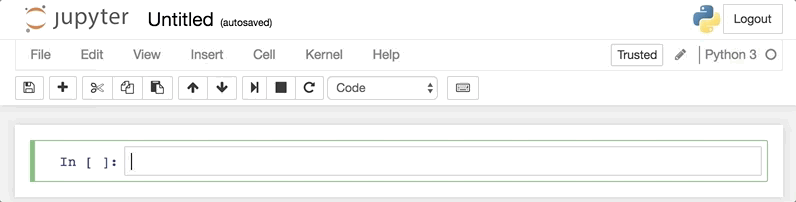
- Python buyrug'ini kiriting! Bu bir nechta satrlarda buyruq bo'lishi mumkin - Enter tugmasini bosganingizda hech narsa boshlanmaydi va o'sha katakchada yangi satr paydo bo'ladi!
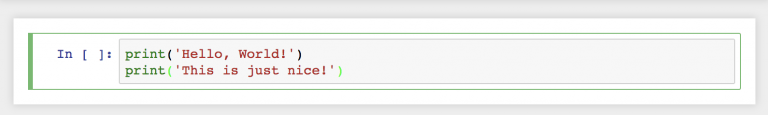
- Python buyrug'ini ishga tushirish uchun bosing
SHIFT + ENTER!
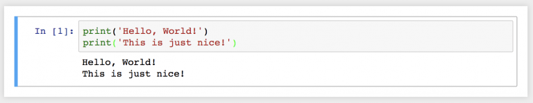
- Biror narsani kiriting va ustiga bosing
TAB. Iloji bo'lsa, Jupyter avtomatik ravishda ifodani to'ldiradi ( Python buyruqlari va ko'rsatilgan o'zgaruvchilar uchun ). Agar bir nechta variant bo'lsa, ochiladigan menyu paydo bo'ladi.
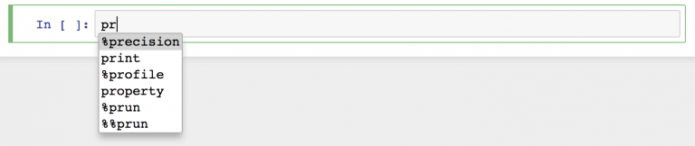
Python asoslari
Mukammal! Sizga kerak bo'lgan hamma narsani texnik nuqtai nazardan bilasiz. Maqolaning qolgan qismi Python -ni Data Science -ga o'tishdan oldin o'rganishingiz kerak bo'lgan asosiy tushunchalarga qaratiladi. Bu 6 ta tushuncha:
- O'zgaruvchilar va ma'lumotlar turlari
- Python -dagi ma'lumotlar tuzilmalari
- Funktsiyalar va usullar
- Bayonot (operator), agar
- Tsikllar
- Python sintaksisi asoslari
O'qish va amaliyot jarayonini soddalashtirish uchun ushbu 6 ta mavzu 6 ta maqolaga bo'lingan. Mana birinchisi.
Python asoslari # 1: O'zgaruvchilar va ma'lumotlar turlari
Python -da qiymatlar o'zgaruvchilarga beriladi. Nima uchun? Chunki u kodni yaxshilaydi - bu uni yanada moslashuvchan, tushunarli va qayta ishlatishni osonlashtiradi. Shu bilan birga, "topshiriq kontseptsiyasi" dasturlashning eng qiyinlaridan biri hisoblanadi. Agar kod boshqa elementga ishora qilsa, bu oson emas. Lekin ko'nikishingiz bilanoq, sizga yoqishni boshlaydi!
Keling, qanday ishlashini ko'rib chiqaylik!
Bir it ( "Freddie"), va uning xarakterini saqlab qolish uchun kerak deb yozilgan ( name, age, is_vaccinated, birth_yearva hokazo) Python o'zgaruvchilar bilan. Jupyter daftarchasi katagiga quyidagilarni kiriting:
dog_name = 'Freddie'
age = 9
is_vaccinated = True
height = 1.1
birth_year = 2001
Eslatma: xuddi shunday qilish mumkin, har bir katak uchun bitta o'zgaruvchi. Ammo bu birma-bir yechim sodda va oqlangan.
Bundan buyon, agar siz o'zgaruvchilar nomlarini kiritsangiz, ular tegishli qiymatlarni qaytaradi:
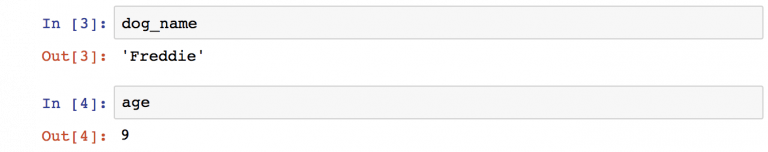
SQL singari, Python ham bir nechta turdagi ma'lumotlarga ega.
Masalan, o'zgaruvchi dog_nameqatorni saqlaydi 'Freddie':. Python 3-da, satr-bu Unicode belgilar ketma-ketligi (raqamlar, harflar, tinish belgilari va boshqalar), shuning uchun u raqamlar, undov belgilari va deyarli hamma narsani o'z ichiga olishi mumkin (masalan, "R2-D2"-to'g'ri satr) ... Pythonda satrni aniqlash oson - u tirnoqlarda yozilgan.
ageva birth_yearbutun sonlarni ( 9va 2001) saqlang - Python raqamli ma'lumotlar turi . Boshqa ma'lumotlar turi - bu o'zgaruvchan nuqta raqamlari (float). Masalan, bu heightqiymatga ega 1.1.
TrueO'zgaruvchining qiymati is_vaccinatedboolean (yoki boolean) tipdir. Bu tur faqat ikkita qiymatga ega: Trueva False.
Jadvaldagi xulosa:
| O'zgaruvchan ism | Ma'nosi | Ma'lumot turi |
|---|---|---|
dog_name | 'Freddie' | str ("string" - string uchun qisqacha) |
age | 9 | int ("tamsayı" qisqasi - butun son) |
is_vaccinated | True | bool (mantiqiy - boolean turi uchun qisqa) |
height | 1.1 | suzuvchi (suzuvchi uchun qisqa - suzuvchi nuqta) |
birth_year | 2001 | int (butun son uchun qisqacha) |
Boshqa turdagi ma'lumotlar ham bor, lekin bu to'rttasi sizni boshlash uchun etarli bo'ladi.
Har qanday Python o'zgaruvchisini qayta yozish mumkinligini bilish juda muhimdir. Masalan, agar siz yugurayotgan bo'lsangiz:
_dog_name = 'Eddie'
Jupyter daftarchasida itning ismi endi "Freddi" bo'lmaydi ...

Python o'zgaruvchilari - asosiy operatorlar
O'zgaruvchilar nima ekanligini bilasiz. Ular bilan tajriba o'tkazish vaqti keldi! Keling, ikkita o'zgaruvchini aniqlaymiz: ava b:
a = 3
b = 4
Siz nima qila olasiz ava b? Birinchidan, arifmetik amallar to'plami bor! Hech narsa yoqmaydi, lekin bu erda ro'yxat:
| Operator | U nima qilyapti? | Natija |
|---|---|---|
a + b | A va b qo'shiladi | 7 |
a - b | A dan b olib tashlanadi | -1 |
a * b | A ni b ga ko'paytiradi | 12 |
a / b | A ni b ga ajratadi | 0,75 |
b % a | B ni a ga bo'linadi va qolganini qaytaradi | 1 |
a ** b | A ni b kuchiga ko'taradi | 81 |
Jupyterda shunday ko'rinadi:
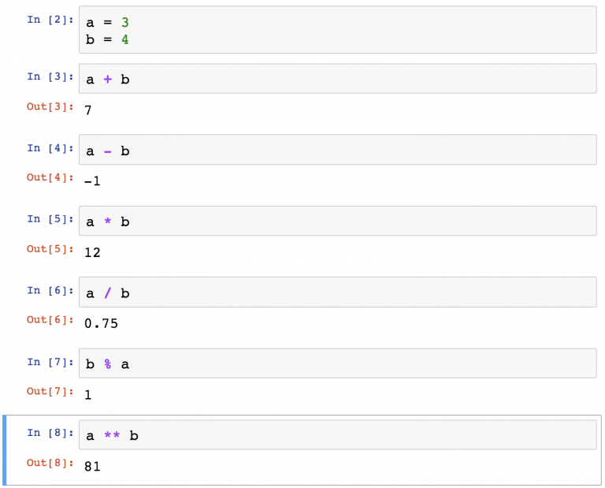
Eslatma: Jupyter daftaridagi o'zgaruvchilar bilan o'zingizni sinab ko'ring.
Taqqoslash operatorlari bilan o'zgaruvchilardan foydalanishingiz mumkin . Natijada har doim mantiqiy bo'ladi Trueyoki False. ava bhali ham 3va 4.
| Operator | U nima qilyapti? | Natija |
|---|---|---|
a > b | Rivoji ko'proq bo'lsin aortiqb | False |
a < b | Rivoji kam bo'lsin adanb | True |
a == b | Chiqadi emas avab | False |
Jupyter daftarchasida:
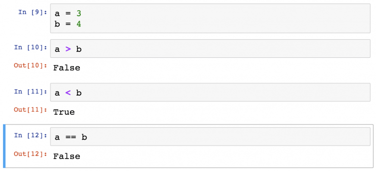
Natijada o'zgaruvchilarning o'zi mantiqiy operatorlar bo'lishi mumkin. Belgilaylik cva d:
c = True
d = False
| Operator | U nima qilyapti? | Natija |
|---|---|---|
c and d | Trueagar cva d-True | False |
c or d | Trueagar cyoki d-True | True |
not c | Qarama-qarshi c | False |
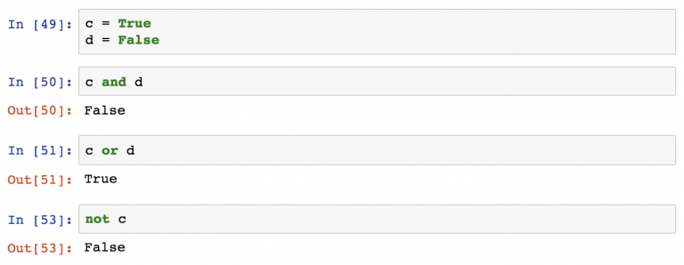
Bu oson va ehtimol unchalik qiziq emas, lekin baribir: bularning barchasini Jupyter daftariga yozib ko'ring , buyruqlarni bajaring va elementlarni ulashni boshlang - bu yanada qiziqarli bo'ladi.
Vazifalarga o'tish vaqti keldi.
O'zingizni №1 sinovdan o'tkazing
Mana ba'zi o'zgaruvchilar:
a = 1
b = 2
c = 3
d = True
e = 'cool'
Qanday turdagi ma'lumotlar qaytariladi va butun operatsiyaning natijasi qanday bo'ladi?
a == e or d and c > b
Eslatma: Bu savolga avval Pythonsiz javob berishga harakat qilib ko'ring - keyin to'g'ri aniqlaganingizni tekshiring!
...
...
...
Javob: bu qiymatga ega boolean ma'lumotlar turi bo'ladi True.
Nima uchun? Chunki:
- Qiymat
a == e,Falsechunki 1 "salqin" ga teng emas - Ta'rif bo'yicha qiymat
dtengdirTrue - Qiymat
c > bteng,Truechunki 3 2 dan katta
Shunday qilib, u a == e or d and c > baylanadi False or True and True, bu oxir -oqibat olib keladi True.
O'zingizni №2 sinovdan o'tkazing
Oldingi ishdagi o'zgaruvchilardan foydalaning:
a = 1
b = 2
c = 3
d = True
e = 'cool'
Ammo bu safar biroz o'zgartirilgan ifoda natijasini aniqlashga harakat qiling:
not a == e or d and not c > b
Ushbu muammoni to'g'ri hal qilish uchun siz mantiqiy operatorlarning bajarilish tartibini bilishingiz kerak :
- emas
- va
- yoki
...
...
...
Javob: True.
Nima uchun? Keling, tahlil qilaylik.
Oxirgi ish mantig'idan foydalanib, siz quyidagicha xulosa chiqarishingiz mumkin not False or True and not True:.
Bayonot birinchi navbatda bajariladi not. Hamma notbaholanganidan so'ng , bu True or True and False:.
Ikkinchi qadam - operatorni aniqlash and. Biz tarjima va olish True or (True and False)uchun qaysi yo'l, True or False.
Va oxirgi qadam or:
True or False → True
xulosalar
Осознали ли вы, что программировали на Python 3? Не правда ли, что было легко и весело?
Хорошие новости в том, что в остальном Python настолько же прост. Сложность появляется от объединения простых вещей… Именно поэтому так важно знать основы!
В следующей части «Python для Data Science» вы узнаете о самых важных структурах данных в Python.